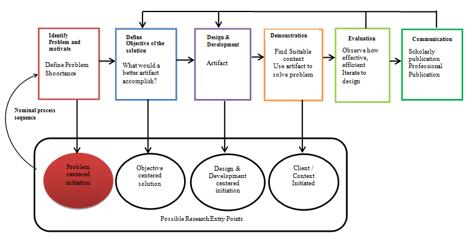

Description Of the Project Processes and Cycle
This study will use Design science research approach (DSR) (Vaishnavi, & Kuechler Jr, 2007), which incorporates mixed method design. DSR has been described as an evaluation cycle methodology (Hevner, 2007) which can benefit from the strengths of mixed methods.
The DSR research method uses phases which can be followed through as a singularity or through iteration using circumspection (Vaishnavi, & Kuechler Jr, 2007). The phases start with the awareness of problem which tries to find an interesting problem which could include new developments within the field or industry.
Phase two looks at the suggestion, this information is drawn from existing knowledge base for a problem, however the suggestion may be inadequate for the problem or suffer from knowledge gaps, which then can make it a research problem. This should be able to produce a solution which tentatively can be used to implement an artifact in the next phase.
Phase three is the development of the artifact, this is then carried out in partial or in full, if successful then they are evaluated according to the functional specifications created.
Phase four evaluates the results from the development phase and further suggestions could be made through circumspection or iteration. The basis of iteration is the flow from partial completion of the cycle back to any phase, this is shown in figure one.
Phase five is the conclusion, this can indicate the end of the research cycle and completion of the DSR project.

Design Science Research Methodology Process Model (Adopted from Peffers et al. 2008)